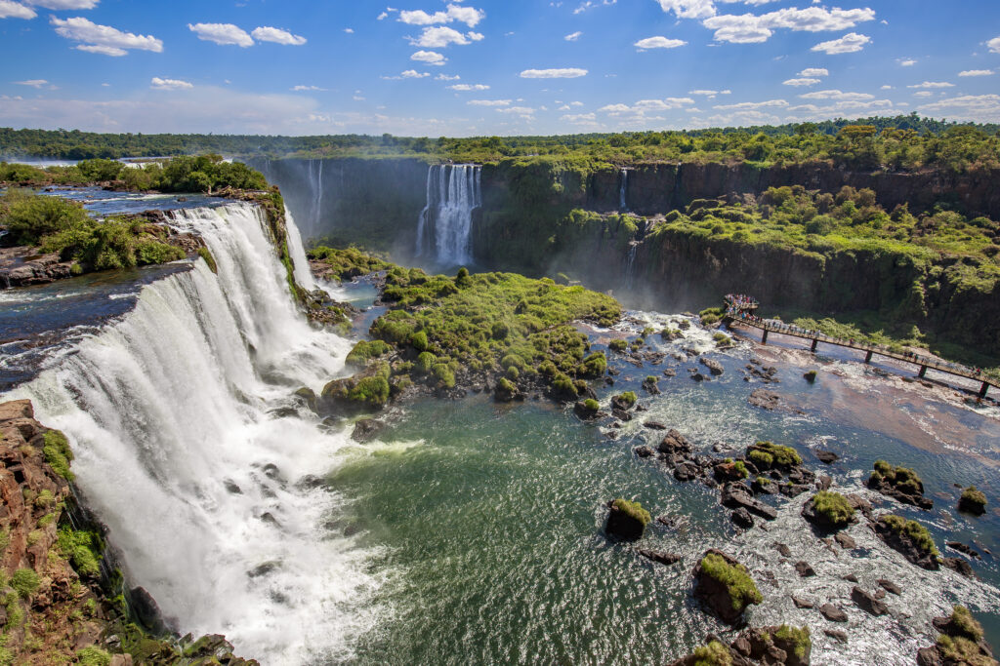

As Cataratas do Iguaçu, no Parque Nacional do Iguaçu (Foz do Iguaçu, PR), são um dos maiores espetáculos naturais do mundo e Patrimônio Natural da Humanidade. Na fronteira entre Brasil e Argentina, suas mais de 270 quedas d'água em meio à Mata Atlântica garantem um cenário inesquecível. Nas trilhas e passarelas panorâmicas, o visitante sente de perto a energia das águas, especialmente ao se aproximar da imponente Garganta do Diabo. Entre a névoa refrescante e os arco-íris formados pelo sol, ainda é possível observar a fauna local, como quatis, aves e borboletas. Com excelente estrutura turística, o destino oferece desde mirantes acessíveis até passeios cheios de adrenalina, como o Macuco Safari de barco e voos panorâmicos de helicóptero. É o roteiro ideal para quem busca contato intenso com a natureza e paisagens marcantes.
